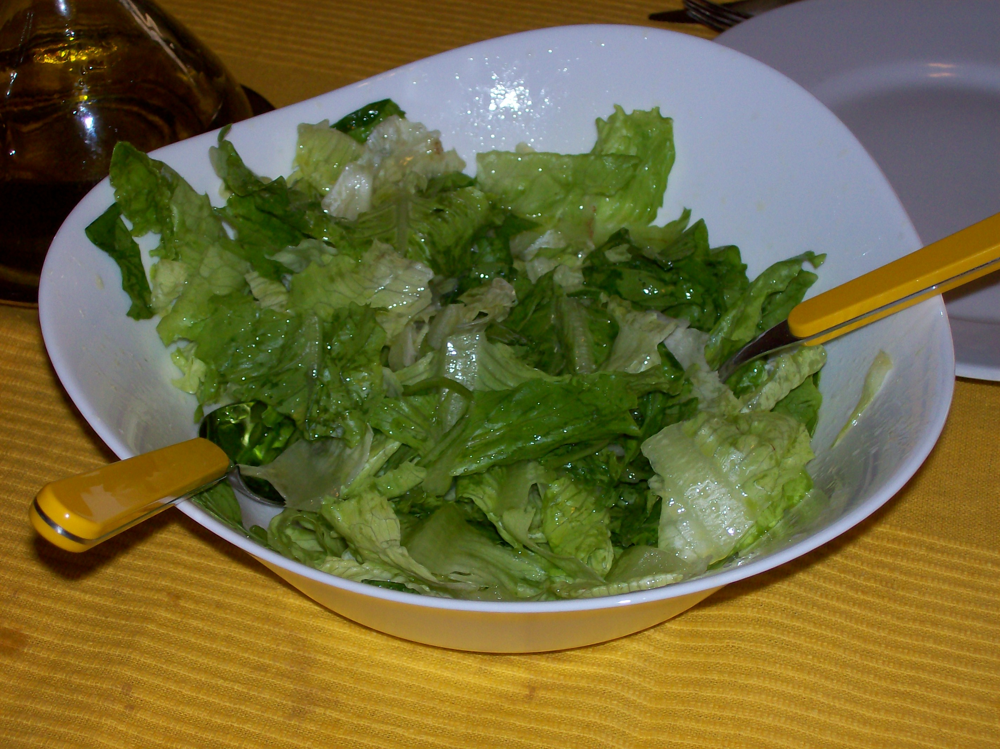
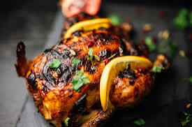
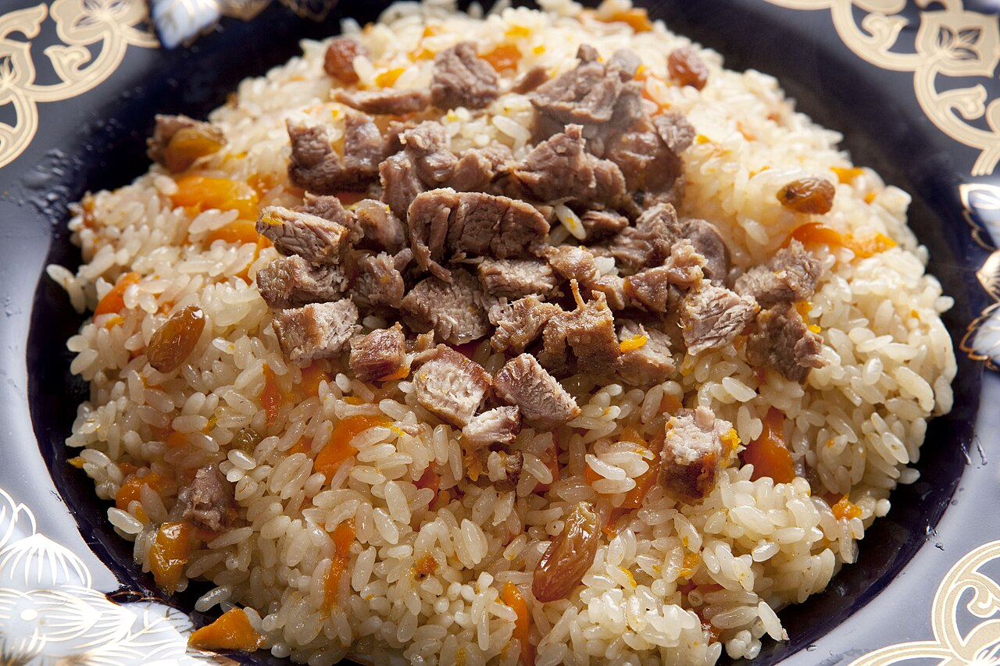

Farm-to-Table Delights
Tarlac is one of the Philippines’ top agricultural provinces – its fertile plains produce rice, corn, vegetables, fruits, and livestock that feed the nation. Farm-to-table dining here means meals made with ingredients harvested just hours before, highlighting the fresh, natural flavors of Tarlac’s land.
Featured Farm-to-Table Dishes & Experiences
-

Fresh Farm Salad -

Grilled Free-Range Chicken -

Tarlac Rice Pilaf
About These Fresh Offerings
- Fresh Farm Salad: Made with crisp lettuce, cherry tomatoes, cucumbers, bell peppers, and carrots – all grown on Tarlac farms like those in Luisita and Moncada. Served with a light vinaigrette made from local calamansi and extra virgin coconut oil pressed from province-grown coconuts.
- Grilled Free-Range Chicken: Chickens raised on local farms with access to open pastures and fed with corn and rice from Tarlac fields. Marinated in garlic, lemongrass, and native soy sauce before grilling – the meat is juicy and full of flavor, with no added preservatives.
- Tarlac Rice Pilaf: Uses premium fragrant rice grown in Tarlac’s irrigated fields, cooked with fresh herbs, mushrooms, and diced vegetables from nearby farms. Some restaurants add locally raised shrimp or pork for extra richness.
- Fresh Fruit Platter: Features seasonal fruits like mangoes (from Camiling), pineapples (from Capas), bananas, and papayas – all picked at peak ripeness for maximum sweetness and nutrition.
Where to Enjoy Farm-to-Table Dining
- Luisita Farm Restaurant (Luisita Estate): Sits right in the middle of working farmlands – ingredients are harvested daily from the estate’s fields and orchards. They offer farm tours before meals so guests can see where their food comes from.
- Moncada Organic Farm Kitchen: A certified organic farm serving meals made entirely from their own produce and livestock – try their farm salad and grilled chicken for a true taste of Tarlac’s soil.
- San Manuel Farm-to-Table Cafe: Focuses on traditional Tarlac dishes made with modern farm-to-table principles – their rice pilaf and fruit platters are customer favorites.
- Community Supported Agriculture (CSA) Programs: Some farms offer weekly boxes of fresh produce, along with recipes and cooking tips to help visitors make their own farm-to-table meals at their accommodations.
Why Farm-to-Table Matters in Tarlac
- Supports Local Farmers: Directly benefits small-scale farmers in Tarlac, helping them earn fair prices for their hard work and keep traditional farming practices alive.
- Healthier Options: No preservatives, pesticides, or artificial additives – meals are fresh, nutritious, and gentle on the body.
- Connects People to Land: Dining farm-to-table helps visitors understand Tarlac’s agricultural heritage and the importance of sustainable food production.
- Reduces Carbon Footprint: Ingredients don’t travel far to reach the plate, cutting down on transportation emissions and supporting environmental sustainability.